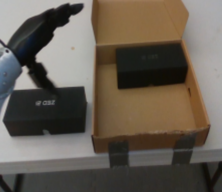
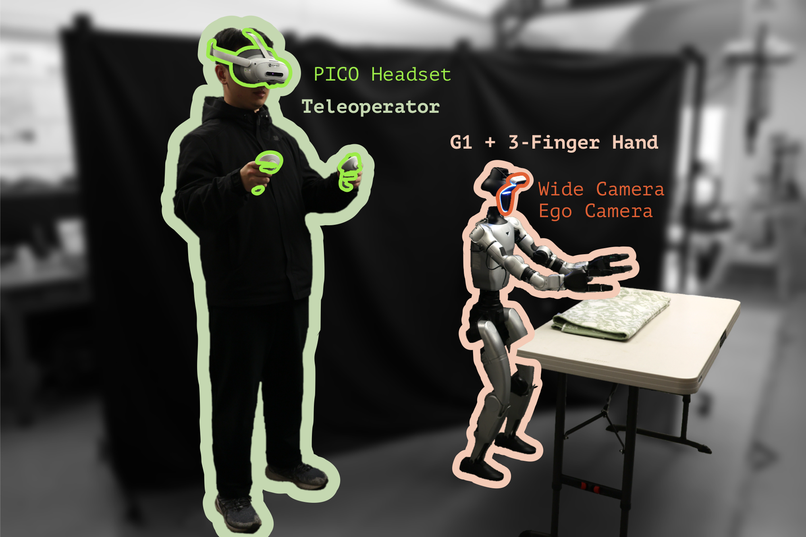

Robot foundation models are getting remarkably capable

Bimanual manipulation

Humanoids

Language-conditioned skills
One generalist policy — many tasks, many embodiments, out of the box. footage: Google DeepMind, Gemini Robotics
Robotics is following the same playbook

- The most capable robot foundation models may not be fully open-weight
- Capability lives behind a service, not a checkpoint
- Developers may get only one interface: a managed SFT API
Gemini Robotics On‑Device: a powerful foundation
- A powerful robot foundation model, designed to run locally on robots
- Exposed through a managed SFT API
- Fine-tuned on the same demonstrations, it already far outperforms open-weight alternatives
Box packing
Cup insertion
Bimanual plate handover
success rate % · 100 trials · same demonstrations

Imitation alone leaves a deployment gap

Success rate slides as contact gets richer

A limit of SFT-only adaptation — for any policy, not any particular model.
Every door into closed-loop training is locked

- Mastery takes practice: the robot must learn in closed loop
- Standard closed-loop learning needs gradients, losses, action likelihoods, custom objectives
- A closed-weight model exposes none of them — by design
The only access point: a managed SFT API.
CLIFT — Closed-Loop Iterative Fine-Tuning

- We cannot open the model —
but we can change what it learns from - Not just expert demonstrations: the robot’s entire deployment experience
- Successes, failures, and everything in between
01Score
The reward model watches every rollout

- Scores task progress, execution quality, and safety at every step
- Judges rollouts like a human operator
- Credit assigned chunk by chunk, not per episode
02Relabel
How a chunk earns its advantage token
Return
G(τ) = Σ γΔt Rθ(ot; ℓ)
the chunk’s discounted return over its window
Similar states



DINOv3 cosine · best frame per rollout
their returns form the comparison set
✦ Binarize
The percentile threshold auto-calibrates credit to state difficulty · human demonstrations are always Advantage=True.
02Relabel
Reward feedback becomes ordinary SFT data

- Each chunk compared, via visual retrieval, against chunks from similar states → advantage token
- Observation and action exactly as executed; the advantage written into the instruction, in plain text
- To the API, this is just supervised data
03Condition
At inference, the token becomes a switch

- During training the advantage token was a label
- At deployment it is flipped one way — True
- The policy steers toward what humans prefer, away from what the reward model rejected
04Iterate
Deploy → score → relabel → fine‑tune — then again

- Relabeled rollouts appended to a cumulative dataset
- Base model re-fine-tuned from scratch each cycle — avoids distributional drift
- Each cycle: a stronger task specialist
Real Unitree G1 humanoid · three contact-rich tasks

Whole-body VR teleoperation for demonstrations

Box packing · cup insertion · bimanual plate handover
Whole-body balancing throughout — end-effector pose and contact geometry keep shifting.
Generalist → specialist, in two cycles

Box packing
93%→100%

Cup insertion
70%→98%

Bimanual plate handover
53%→96%
Success rate over 100 trials per task · API-only · no additional human demonstrations
Emergent behaviors from closed-loop practice

reorients the box in-hand to set up an easier grasp

recovers from a failed first insertion — retries and succeeds
Behaviors absent from the teleoperated demonstrations.